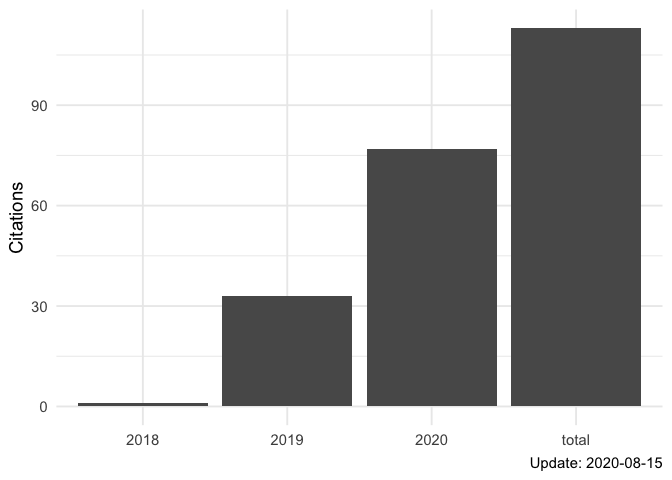
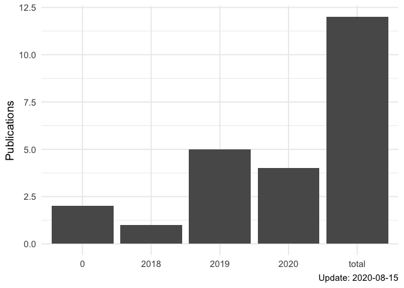

The goal of tinyscholar is to provide a simple way to get and show Google scholar profile.
You can install the released version of tinyscholar from CRAN with:
install.packages("tinyscholar")
And the development version from GitHub with:
# install.packages("devtools") devtools::install_github("ShixiangWang/tinyscholar")
Here I will use my profile as an example.
Firstly, you need to get your Google scholar ID from URL of your Google scholar profile.
Then you can use function tinyscholar() to get the tidy data, which is a list of two data.frame with added profile class.
library(tinyscholar) profile <- tinyscholar("FvNp0NkAAAAJ") str(profile, max.level = 1) #> List of 2 #> $ publications:'data.frame': 12 obs. of 5 variables: #> $ citations :'data.frame': 4 obs. of 2 variables: #> - attr(*, "class")= chr [1:2] "ScholarProfile" "list"
You can use this data in your way. The following parts provide two simple ways to show the profile.
Table is the best way to show the scholar profile. Tinyscholar uses gt package to generate tables which can be easily modified.
tb <- scholar_table(profile) tb$citations
|
Citations |
|
|---|---|
|
when |
count |
|
total |
113 |
|
2018 |
1 |
|
2019 |
33 |
|
2020 |
77 |
|
Update: 2020-08-15 |
|
tb$publications
|
Publications |
||||
|---|---|---|---|---|
|
title |
authors |
venue |
citations |
year |
|
APOBEC3B and APOBEC mutational signature as potential predictive markers for immunotherapy response in non-small cell lung cancer |
S Wang, M Jia, Z He, XS Liu |
Oncogene 37 (29), 3924-3936, 2018 |
55 |
2018 |
|
Sex Differences in Cancer Immunotherapy Efficacy, Biomarkers, and Therapeutic Strategy |
S Wang, LA Cowley, XS Liu |
Molecules 24 (18), 3214, 2019 |
19 |
2019 |
|
Antigen presentation and tumor immunogenicity in cancer immunotherapy response prediction |
S Wang, Z He, X Wang, H Li, XS Liu |
eLife, 2019 |
17 |
2019 |
|
The predictive power of tumor mutational burden in lung cancer immunotherapy response is influenced by patients’ sex |
S Wang, J Zhang, Z He, K Wu, XS Liu |
International journal of cancer 145 (10), 2840-2849, 2019 |
17 |
2019 |
|
The UCSCXenaTools R package: a toolkit for accessing genomics data from UCSC Xena platform, from cancer multi-omics to single-cell RNA-seq |
S Wang, XS Liu |
Journal of Open Source Software 4 (40), 1627, 2019 |
4 |
2019 |
|
Can tumor mutational burden determine the most effective treatment for lung cancer patients? |
S Wang, Z He, X Wang, H Li, T Wu, X Sun, K Wu, XS Liu |
Lung Cancer Management 8 (4), LMT21, 2020 |
1 |
2020 |
|
UCSCXenaShiny: an R package for exploring and analyzing UCSC Xena public datasets in web browser |
S Wang, Y Xiong, K Gu, L Zhao, Y Li, F Zhao, X Li, XS Liu |
Preprints, 2020 |
0 |
2020 |
|
Copy number signature analyses in prostate cancer reveal distinct etiologies and clinical outcomes |
S Wang, H Li, M Song, Z He, T Wu, X Wang, Z Tao, K Wu, XS Liu |
medRxiv, 2020 |
0 |
2020 |
|
Revisiting neoantigen depletion signal in the untreated cancer genome |
S Wang, X Wang, T Wu, Z He, H Li, X Sun, XS Liu |
BioRxiv, 2020 |
0 |
2020 |
|
Ras Downstream Effector GGCT Alleviates Oncogenic Stress |
Z He, S Wang, Y Shao, J Zhang, X Wu, Y Chen, J Hu, F Zhang, XS Liu |
iScience 19, 256-266, 2019 |
0 |
2019 |
|
sigminer v1. 0.0 |
S Wang |
0 |
0 |
|
|
sigminer: an easy-to-use and scalable toolkit for genomic alteration signature analysis and visualization in R logo |
S Wang |
0 |
0 |
|
|
Update: 2020-08-15 |
||||
Similarly, you can show numeric data with ggplot2 package.
pl <- scholar_plot(profile) pl$citations

pl$publications

R package scholar is a more comprehensive package to get and visualize the Google scholar profile. However, tinyscholar is lightweight and not limited in China.